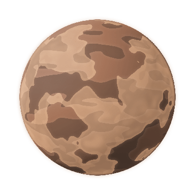

항로 1/9
첫 번째 신호
?
Ⅱ
≡
출발
0 / 9

목적지
선체
3 / 3
도크 포화 → 선체 −1
앞줄
파랑
27
+21
앞 6명 관측 · 순서대로 탑승
탑승장
빈칸 3
마지막 도크 · 포화 시 선체 −1
셔틀
09
화살표 쪽으로 출차
같은 색 3명 → 출항
↶ 회항 1
귀환 −1
×
원정 메뉴
계속
효과음 켜짐
이번 항로
대원
0 / 27명
점수
0
연속 출항
×0
점수 보너스
회항
1 / 1회
관측
앞 6명
빈 도크
3칸
누적 점수
0
새 원정
강화
0
눌러서 효과 보기
원정 동안 유지
기록
최고 항로
01
홈
게임 설계 · 출처
×